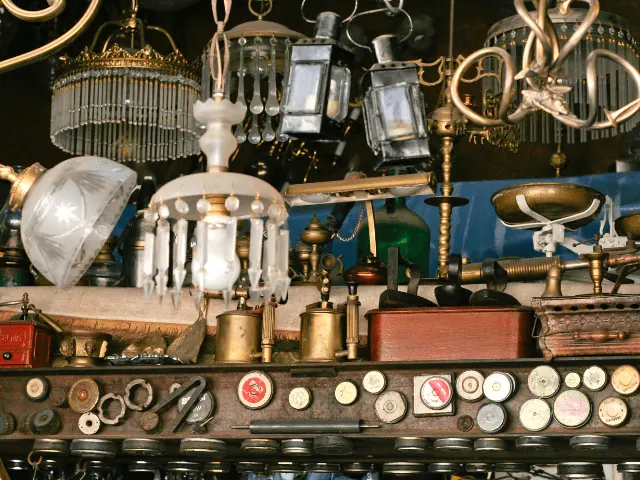

Kringloopwinkels in Nijmegen
Bijgewerkt op 3 november 2026.
Een kast voor een tientje, een vintage jas of gewoon een middag snuffelen: Nijmegen heeft grote kringloopwinkels aan de rand van de stad en kleine vintage- en tweedehandszaken in de binnenstad. Op deze pagina zetten we ze op een rij, met waar je spullen kunt brengen en welke winkels op zondag open zijn. Alle 22 winkels met openingstijden staan in onze bedrijvengids.

De grote kringloopwinkels
- Het Goed, Industrieweg 54: de grootste kringloopwinkel van de stad, op het industrieterrein in Nijmegen-West. Meubels, kleding, boeken, huisraad en elektronica. Je kunt er spullen brengen, en de winkel is ook op zondag open.
- Kringloopwinkel Marcel, Marie Curiestraat 72: in Nijmegen-Zuid, veel meubels, spullen brengen kan, op zondag open.
- Kleren Goed, Prins Hendrikstraat 14: kringloop en meubels in Nijmegen-Oost.
- Riesruimt, Zwanenveld 6600: kringloop, vintage kleding en meubels in Dukenburg.
- Basta, Begijnenstraat 34: kringloopwinkel voor het goede doel midden in het centrum, met webshop; spullen brengen kan.
Vintage en tweedehands kleding
- Habbekrats, In de Betouwstraat 17: vintage kleding, antiek en meubels in de binnenstad.
- Just Vintage, Passage Molenpoort 6: vintage kleding voor het goede doel.
- Secondhand Rose, Wintersoord 24: tweedehands kleding voor het goede doel; je kunt er kleding brengen.
- Studio Zoef en 2ndMas, Van Welderenstraat: twee tweedehands kledingzaken in dezelfde winkelstraat.
- Appel & Ei, Augustijnenstraat 39: tweedehands dames- en herenkleding, schoenen en accessoires.
- ReShare Store, Lange Hezelstraat 84: de kledingwinkel van het Leger des Heils in de oudste winkelstraat van de stad.
- Javco, Zwanenveld 9016: vintage kleding in Dukenburg, met webshop.
Antiek en meubels
- Woodstock Wonen, Gerard Noodtstraat 4: antieke en oude meubels in de binnenstad.
- Strydhagen en Vivre Interieur Authentique, Stationsweg: twee antiekzaken naast elkaar aan de Stationsweg in Nijmegen-Oost, waaronder een antiekhal van zo'n 11.000 vierkante meter.
- Bert and Co, Holtakkerweg 7: antiek en meubels in Nijmegen-West, ook via de webshop.
Spullen brengen en markten
Spullen brengen kan bij Het Goed, Kringloopwinkel Marcel, Basta, Habbekrats, Just Vintage, Secondhand Rose, Studio Zoef, Javco en de Terre des Hommes Shop. Grote meubels halen de meeste kringloopwinkels op afspraak op. Wie liever op een markt zoekt: op Koningsdag is de vrijmarkt in het Goffertpark, en door het jaar heen zijn er rommel- en vlooienmarkten, zie markten in Nijmegen. Tips voor het snuffelen zelf lees je in parels vinden in Nijmeegse kringloopwinkels.
Meer in onze gids kringloop en tweedehands in Nijmegen.
Veelgestelde vragen
Wat is de grootste kringloopwinkel van Nijmegen?
Het Goed aan de Industrieweg 54 in Nijmegen-West, met meubels, kleding, boeken en huisraad. De winkel is ook op zondag open en je kunt er spullen brengen.
Welke kringloopwinkels in Nijmegen zijn op zondag open?
Het Goed, Kringloopwinkel Marcel en de Terre des Hommes Shop aan de Houtstraat.
Waar kun je in Nijmegen tweedehands spullen brengen?
Bij Het Goed, Kringloopwinkel Marcel, Basta, Habbekrats, Just Vintage, Secondhand Rose, Studio Zoef, Javco en de Terre des Hommes Shop. Grote meubels worden vaak op afspraak opgehaald.
Waar vind je vintage kleding in Nijmegen?
In de binnenstad bij Habbekrats, Just Vintage, Studio Zoef, 2ndMas, Appel & Ei en de ReShare Store; buiten het centrum bij Secondhand Rose en Javco.
Hoeveel kringloop- en tweedehandswinkels heeft Nijmegen?
In onze bedrijvengids staan 22 kringloop-, vintage- en antiekwinkels in Nijmegen, met adres, openingstijden en kenmerken.